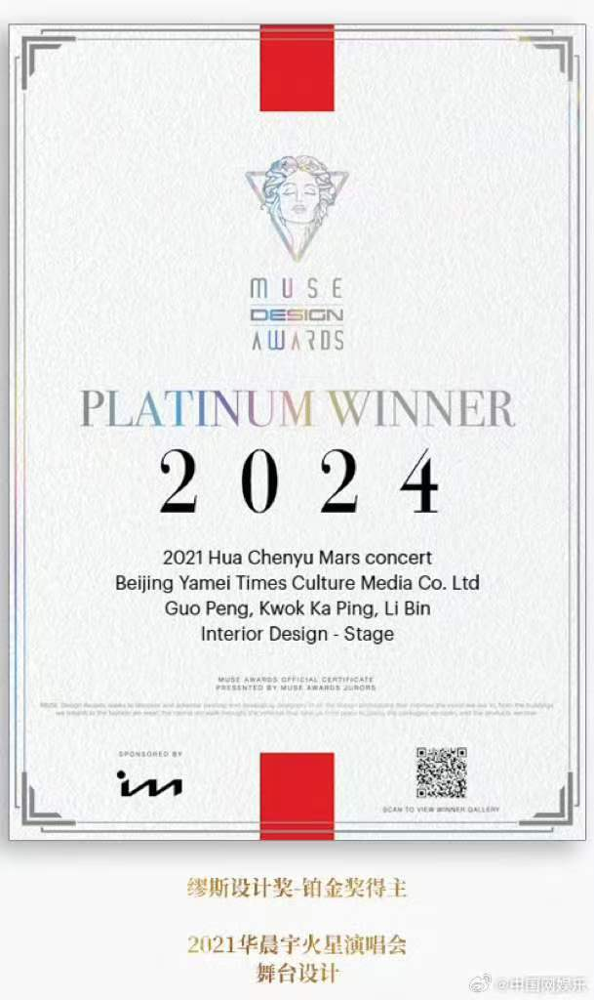
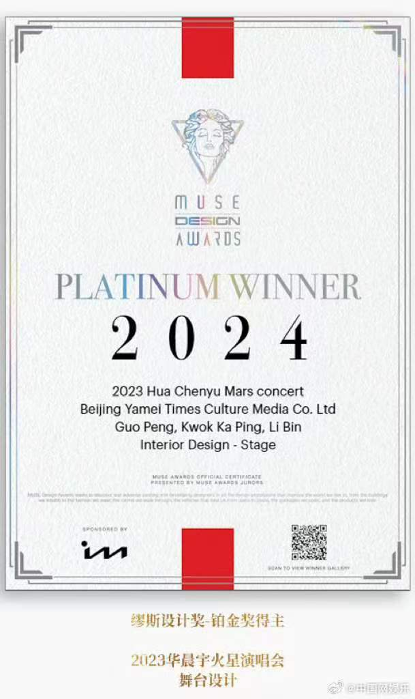
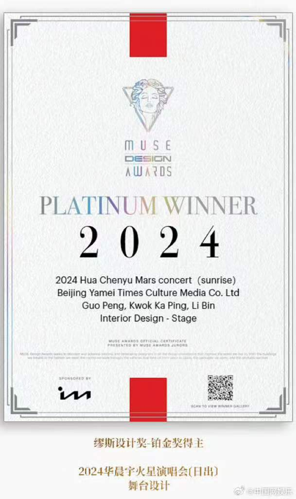
华晨宇火星演唱会舞台设计在2021、2023、2024年三度荣获MUSE Design Awards铂金奖。
缪斯设计奖(Muse Creative Awards)由美国博物馆联盟(AAM)与美国国际奖项协会(IAA)主办,是全球设计领域最具影响力的国际奖项之一,该奖项每年评选一次,严格的评审体系以及高质量的评判标准著称,旨在发掘和表彰室内、产品、时尚等设计领域的杰出者,重点关注人体工程学、创新性、生活水平、原创性和可持续性。
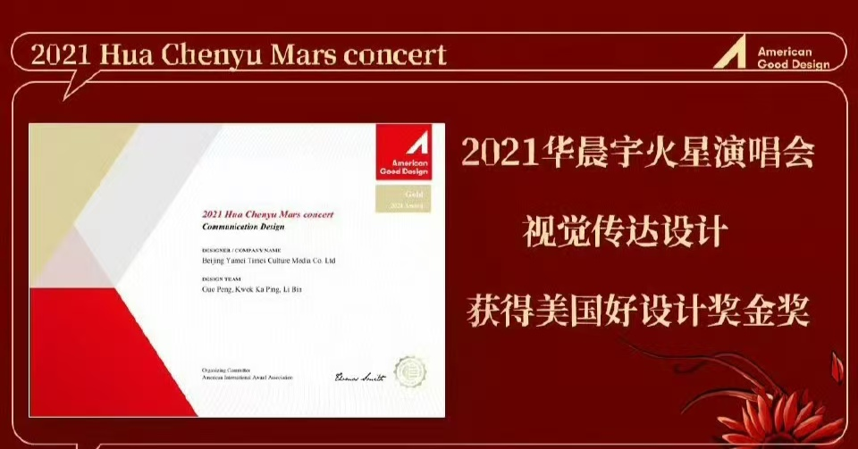
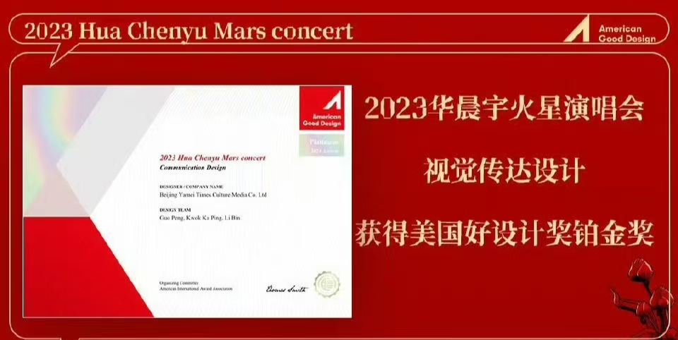
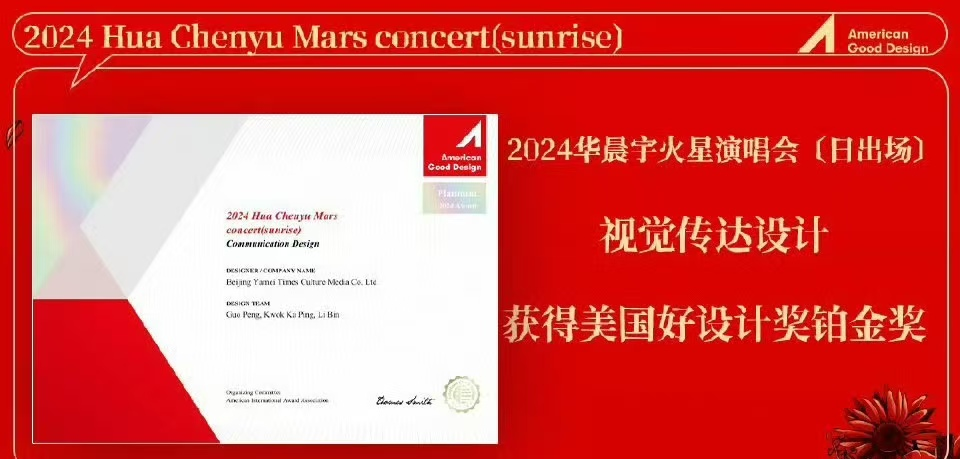
华晨宇火星演唱会舞台设计2023、2024年荣获美国好设计奖铂金奖，2021年荣获美国好设计奖金奖。
美国好设计奖是由国际奖项协会（International Award Association）设立的美国最具权威的新锐国际设计奖项之一。该奖项旨在表彰全球优秀设计作品与新锐设计师，评审标准包括创新、设计美学、功能、社会价值、环境保护等五大维度。
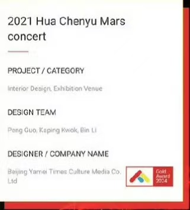
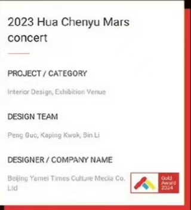
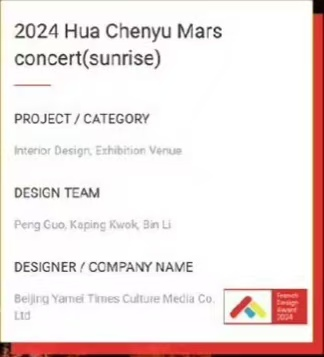
2021年、2023年华晨宇火星演唱会室内设计展览场地荣获法国设计奖金奖，2024年华晨宇火星演唱会（日出）室内设计展览场地荣获法国设计奖。
法国设计奖是世界领先的设计大奖，是作品质量的证明，能为建筑设计、室内设计、城市规划、景观设计、家具设计、照明设计、数码艺术与平面设计、包装设计、珠宝设计、时装与纺织设计、摄影与照片处理设计等多种领域的优秀设计师带来国际曝光和认可度。法国设计奖由国际设计奖协会(IAA)于2015年设立，评审团由世界知名设计专家和教授组成，代表着世界一流的设计欣赏水平。获得法国设计奖，等于得到世界著名设计大师的高度认可。
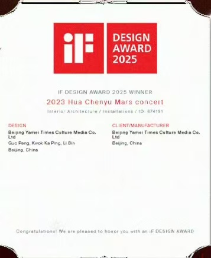
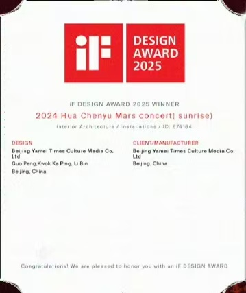
2021年、2023年华晨宇火星演唱会室内设计展览场地荣获法国设计奖金奖，2024年华晨宇火星演唱会（日出）室内设计展览场地荣获法国设计奖。
德国iF设计奖创立于1953年，由德国汉诺威工业设计论坛每年定期举办，以“独立、严谨、可靠”的评奖理念闻名于世。奖项涵盖产品设计、包装设计、传播设计等九大类别，注重设计的创新性、功能性、美学品质、社会责任等方面。每年收到全球各地的优秀设计作品参与角逐，获奖率极低，如2022年仅有不足1%的作品获得iF金奖，2025年共有75个作品斩获iF金奖，其中中国作品13个。